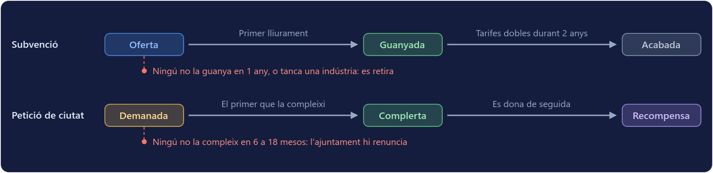

Subvencions i peticions
Ofertes que qualsevol pot aprofitar: tarifes dobles i el que demanen els ajuntaments.
De tant en tant la junta regional ofereix una subvenció i els ajuntaments demanen alguna cosa. Objectius les llista a Oportunitats, i les notícies avisen quan se n'ofereix, se'n guanya o se n'acaba una.
Subvencions
- Una subvenció indica una càrrega, d'on surt i on va. Surt d'una indústria que ningú no ha servit en 90 dies o, si són residus, d'una ciutat de 400 habitants o més. Va a una indústria que l'accepti o, per a mercaderies, aliments o diaris, a una ciutat de 400 habitants o més (1.000 per a cotxes). La ruta fa de 15 a 60 caselles.
- El teu primer lliurament a una estació que arribi al destí, carregat en una estació que arribi a l'origen, la guanya. Els transbords pel camí compten: el que importa és on es va carregar la càrrega per primer cop.
- A partir d'aleshores els teus lliuraments en aquesta ruta cobren el doble durant 2 anys. Qualsevol altre a la ruta cobra la tarifa de sempre.
- Una oferta que ningú no aprofita caduca al cap d'un any. Si tanca una indústria de qualsevol dels extrems, l'oferta es retira, i una subvenció ja guanyada s'acaba amb ella.
- Mentre n'hi hagi menys de 2 en oferta, cada mes hi ha un 12% de probabilitats d'una de nova.


Peticions de les ciutats
Un ajuntament demana alguna cosa que encaixi amb la seva ciutat, amb un termini. Una ciutat té com a màxim una petició, i la seva finestra la mostra a Peticions i recompenses; les ciutats més grans demanen més sovint.
| Petició | Qui la demana | Es compleix amb | Recompensa, una de |
|---|---|---|---|
| Enllaç de passatgers | Ciutats de 700 habitants o més | Els primers passatgers portats a una ciutat a entre 15 i 60 caselles, de 200 habitants o més, que ningú no connecti encara. Entre dues ciutats de 1.500 o més, l'ajuntament pot voler-ho en tren. | un any de drets exclusius de transport +25 de valoració de l'ajuntament |
| Subministrament | Ciutats de 400 habitants o més | Mercaderies o aliments (la petició indica quin) lliurats a la ciutat: unes 2,5 unitats al mes per cada 100 habitants, durant el seu termini. | sis mesos de creixement ràpid un ajut de 50.000 $ |
| Visitants | Ciutats amb una atracció | Passatgers lliurats en una estació que arribi a l'atracció: uns 4 al mes per cada 100 habitants, durant el seu termini. | un ajut de 50.000 $ +25 de valoració de l'ajuntament |
| Servei | Ciutats on algú té una estació | Totes les teves estacions de la ciutat amb una valoració del 60% o més durant 12 finals de mes seguits. Un final de mes que no hi arribi reinicia el compte. | un any d'estacions i dipòsits a meitat de preu +25 de valoració de l'ajuntament |
- Una petició dona de 6 a 18 mesos, una de servei 18. N'hi pot haver fins a 2 d'obertes alhora al mapa, i cada mes hi ha un 12% de probabilitats d'una de nova.
- El progrés de cada empresa compta per separat, i guanya la primera que hi arriba. La recompensa es fixa quan l'ajuntament fa la petició, i es mostra amb ella.
- La finestra Objectius mostra quant en portes tu i quant en porta el millor rival, amb un botó que mostra la ciutat.
Recompenses
- +25 en la teva valoració de l'ajuntament.
- Un ajut de 50.000 $.
- Drets exclusius de transport durant un any: les estacions de les altres empreses a la ciutat no reben passatgers ni càrrega nous, tot i que els lliuraments a la ciutat continuen pagant. S'acaben abans si qui els té fa fallida.
- Estacions i dipòsits a meitat de preu durant un any, a qualsevol lloc on aquella ciutat sigui la més propera a menys de 18 caselles.
- Un auge de la construcció: la ciutat creix ràpid durant 180 dies, com quan finances edificis.